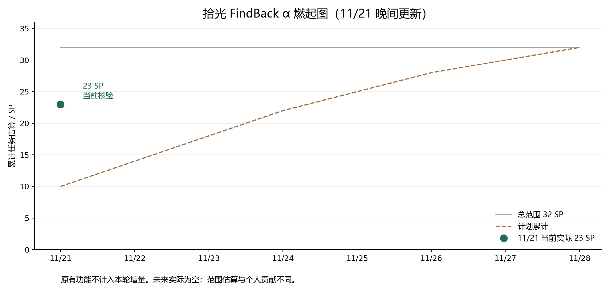
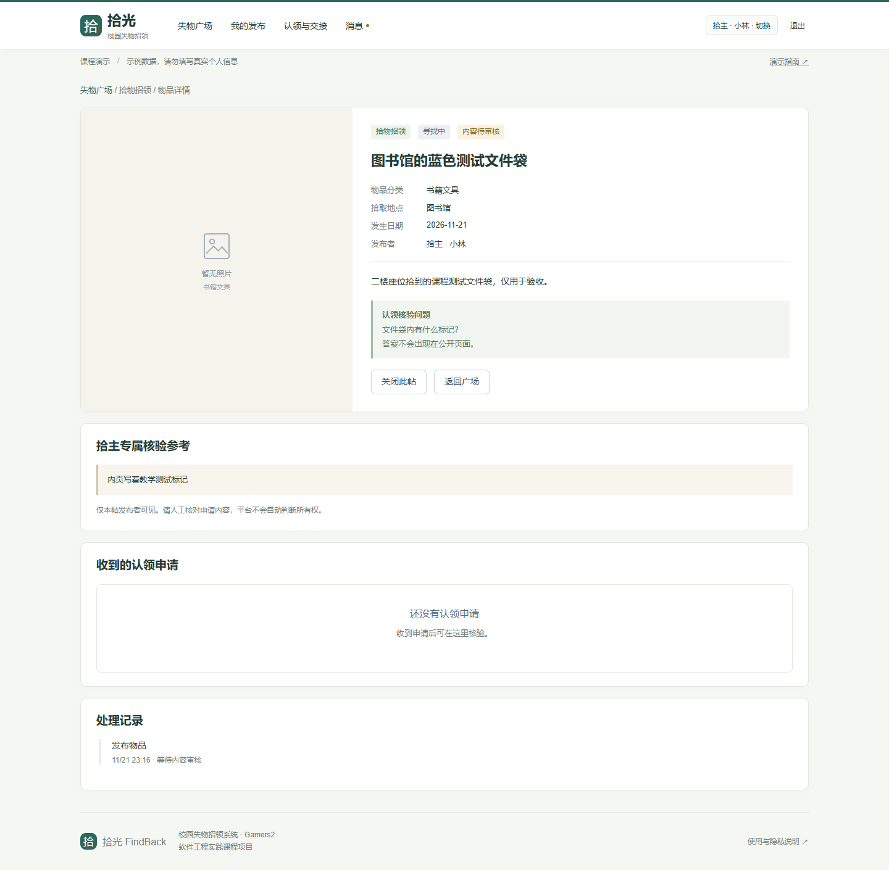
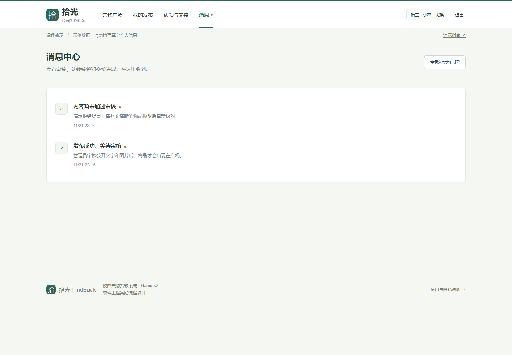
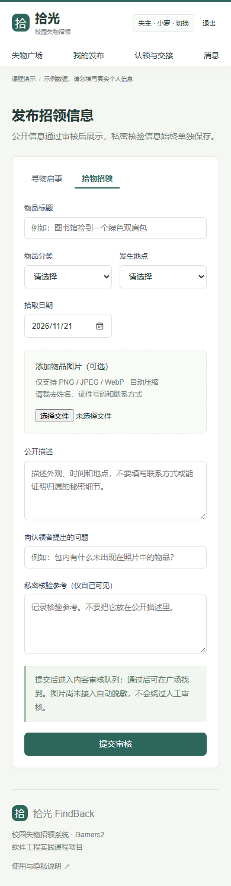
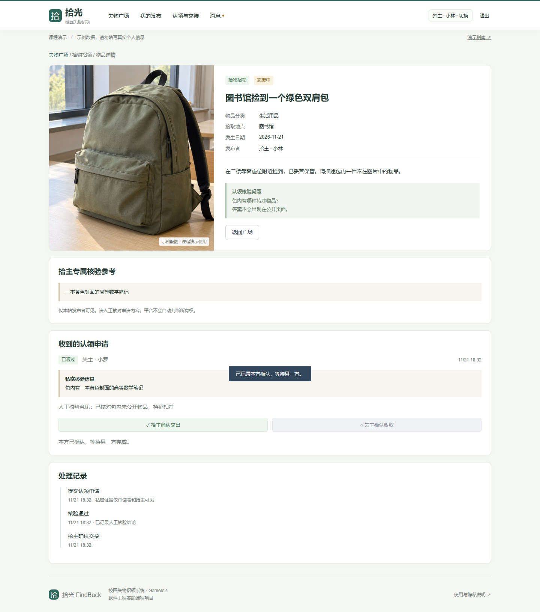
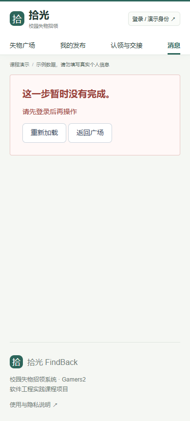
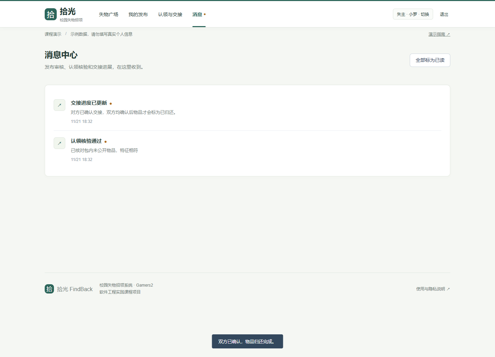

拾光 FindBack α 冲刺材料
截至 2026-11-21。后续日志和总结须按真实进展补齐。
Gamers2｜拾光 FindBack · α 冲刺博客总目录
[TOC]
1 本次冲刺做什么
拾光 FindBack 延续原型作业的校园失物招领流程。本轮从可运行的基础版开始，围绕异常输入、私密认领、双向交接和可重复测试完善系统。α 阶段的八天为 11 月 21—28 日，作业总截止为 11 月 29 日 23:59。
2 博客汇总
下表暂时链接到同包中的正文，便于本地查看。各篇发布后，在“CSDN 正式链接”列填写真实地址，并将本目录博客置顶。GitHub 文稿链接不能替代课程要求的博客发布链接。
| 博客 |
团队发布安排（北京时间） |
正文 |
CSDN 正式链接 |
状态 |
| 总目录 |
11/21 建立，持续更新 |
查看正文 |
待发布后填写 |
可发布首版，正式博客链接发布后回填 |
| 规范、任务与计划 |
冲刺开始前；现为 11/21 整理 |
查看正文 |
待发布后填写 |
可发布计划稿，若已启动按实际发布时间标明补录 |
| 冲刺日志一 |
11/22 晚，覆盖 11/21—22 |
查看正文 |
待发布后填写 |
完整阶段稿，11/22 核对当期事实后发布 |
| 冲刺日志二 |
11/24 晚，覆盖 11/23—24 |
查看正文 |
待发布后填写 |
完整预写稿，11/24 更新当期事实 |
| 冲刺日志三 |
11/26 晚，覆盖 11/25—26 |
查看正文 |
待发布后填写 |
完整预写稿，11/26 更新当期事实 |
| 冲刺日志四 |
11/28 晚，覆盖 11/27—28 |
查看正文 |
待发布后填写 |
完整预写稿，11/28 更新当期事实 |
| 测试报告 |
首日阶段版，11/28 更新最终结果 |
查看正文 |
待发布后填写 |
首日阶段报告可发布，后续追加实测结果 |
| 冲刺总结 |
11/28 晚—11/29 截止前 |
查看正文 |
待发布后填写 |
阶段总结成稿，含 14 人体会参考 |
3 项目与成果入口
当前演示采用教学身份和示例物品。旧墨刀原型仍可辅助讲解设计，α 实际运行以本地前后端系统为准。没有把旧私有云演示站列为公众可用的运行入口。
4 当前检查点
11 月 21 日完成分页边界修复；29 项接口回归与 15 项页面检查通过，日志和运行截图保存在证据目录。后续日期的实际进度尚未发生，按双日检查点补入。每篇日志保留当期燃起图，不用首日截图冒充后续成果。
5 提交方式
每篇文章发布后检查图片、目录、Issue 和提交链接；即使博客在审核中，也按教师说明在截止前向班级作业页提交链接。仅上传仓库或只写未提交都不等于完成作业。总截止后不得继续编辑提交内容。
Gamers2｜拾光 FindBack · 代码规范、任务与八天计划
[TOC]
1 起点与目标
原型阶段已有前后端和数据库，包含发布、搜索、内容审核、私密认领、人工核验、双向交接和通知。原有 18 项测试作为回归基线，不列为本轮新开发。
本轮目标是让基础流程遇到异常输入时行为明确，让关键权限和状态有自动回归，让每个双日检查点都有可追踪成果。图像语义匹配、校园统一认证、小程序、微信推送及自动图片脱敏仍在本轮范围外。
教师要求计划博客在冲刺开始前发布。本稿整理于 11/21；如果团队此前已经开始冲刺，应保留真实发布时间，并在正文说明计划补录，不回填成更早发布。
2 团队代码规范
当前实现使用 HTML/CSS/JavaScript、Node.js ES Modules 和 SQLite。本次参考 JavaScript 的通用规范，并按项目实际约定接口、数据和协作规则。教师列举的 Java 开发手册可供规则分类参考，本系统没有 Java 文件，故不写成执行了 Java 专有规则。Google 的 JavaScript 指南目前标明不再更新，本项目仅参考其中编码约定，规则以本页可执行要求为准。
| 范围 |
本项目约定 |
复核方式 |
| 编码与排版 |
UTF-8，新增或修改块使用 2 空格缩进，单引号，语句分号 |
代码评审；未将旧版压缩函数一次性重排 |
| 命名与模块 |
变量及函数 camelCase，常量说明含义，使用 const/let、import/export |
npm run check 检查语法，命名由评审检查 |
| 职责 |
页面组织交互，服务端负责权限、数据校验和状态转换，数据库适配单独保存 |
变更说明标出所属模块 |
| 接口输入 |
校验类型、范围、日期、长度；页码有限且取整，异常返回明确 4xx |
api.test.mjs、alpha.test.mjs |
| 数据库 |
用户输入参数绑定，跨表成组写入使用 batch，失败回滚 |
SQL 评审和事务回滚用例 |
| 隐私与权限 |
公共接口过滤核验参考，认领证据按申请者/拾主隔离，管理员不自动取得证据 |
权限测试、响应字段核对 |
| 页面输出 |
用户文本先转义再显示，禁止拼接原始用户 HTML |
代码评审及人工检查 |
| 密码与会话 |
密码带盐 PBKDF2；会话令牌摘要存储，失效和退出后禁止私有操作 |
登录、会话失效用例 |
| 业务状态 |
人工核验后进入交接，双方确认才归还，重复操作保持结果一致 |
状态转换用例 |
| 版本与证据 |
Issue 描述验收条件，提交说明关联 Issue，保存测试和页面证据 |
提交链接、TAP 日志与截图 |
| 仓库卫生 |
排除数据库、会话、环境变量、凭据和依赖目录 |
提交前检查 git diff --cached |
以上是本轮采用的规范。语法检查仅检查语法，不等同于 lint、隐私审计或对全部旧代码格式的认证。
修改与合入流程
先记录 Issue 的触发和验收标准，再修改最小相关模块。缺陷修复先加入能暴露问题的测试，修改后运行 npm run check 和 npm test。开发者在自己的实际账号下提交；协作审阅者补充具体意见。合入前核对 git diff，在日志中写真实提交人和 commit，不替成员制造提交历史。
建议分支格式 alpha/A02-pagination，提交格式 fix(A02): normalize item pagination。当前代整理提交作为统一交付提交保留，不据此证明 14 人分别编码。云端业务模块 site/lib/service.mjs 与本地 backend/service.mjs 同步，部署结果另行验证。
完成定义
开发任务有可查看的代码差异、关联 Issue、相关回归和运行证据；测试任务有环境、用例、实际结果和缺陷记录；文档任务有具体文件和核对结果。任务估算完成按验收结果累计，同一成果不在多个任务重复计算。
3 α 工作清单
采用 12 个任务、合计 32 SP 的初始估算。SP 只用于本次排期，数值为当前拟定口径，既不是工时，也不是成员贡献比例。首日形成的工具和证据经过核验后计入已完成；关联成员栏仍为计划责任，等待实际接手和复核。
| 任务 |
内容 |
估算 |
目标日期 |
当前状态 |
| A01 |
代码规范、阶段范围与任务计划 |
2 SP |
2026-11-21 |
首日产物已核验 |
| A02 |
修复非整数分页导致的接口 500 |
3 SP |
2026-11-21 |
首日产物已核验 |
| A03 |
扩展会话、输入、权限与事务回归 |
3 SP |
2026-11-21 |
首日产物已核验 |
| A04 |
真实页面自动操作与截图 |
2 SP |
2026-11-21 |
首日产物已核验 |
| A05 |
配置持续集成与语法检查 |
2 SP |
2026-11-21 |
首日产物已核验 |
| A06 |
键盘操作和小屏交互复核 |
3 SP |
2026-11-24 |
11/21 提前核验完成 |
| A07 |
发布与消息异常路径复核 |
3 SP |
2026-11-24 |
11/21 提前核验完成 |
| A08 |
认领竞争和交接状态联调 |
3 SP |
2026-11-26 |
11/21 提前核验完成 |
| A09 |
跨浏览器与部署边界验收 |
3 SP |
2026-11-27 |
计划 |
| A10 |
测试用例、缺陷与阶段报告 |
2 SP |
2026-11-21 |
首日产物已核验 |
| A11 |
四篇双日冲刺日志与燃起图 |
3 SP |
2026-11-28 |
计划 |
| A12 |
成员复盘、贡献核对与答辩 |
3 SP |
2026-11-29 |
计划 |
4 八天推进安排
| 日期 |
重点 |
当天应留下的材料 |
| 11/21 |
核对基线、补规范和测试、修复分页 |
缺陷复现、修复提交、测试日志、首日截图 |
| 11/22 |
团队接手首日产物、逐人记录、首个双日检查点 |
第 1 篇日志、当天燃起图与最新运行画面 |
| 11/23 |
键盘、小屏、发布和消息异常检查 |
问题单、复核截图及相关提交 |
| 11/24 |
处理前两日问题，第二个检查点 |
第 2 篇日志与 Issue/成果映射 |
| 11/25 |
多申请者和重复请求联调 |
状态测试、缺陷与修复 |
| 11/26 |
完成第三个检查点 |
第 3 篇日志及最新测试结果 |
| 11/27 |
第二浏览器、干净环境运行复核 |
兼容矩阵、运行步骤、环境差异 |
| 11/28 |
最终回归、第四篇日志、总结和演练 |
第 4 篇日志、最终测试、成员复盘和 PPT |
| 11/29 |
检查全部博客和附件、课程提交 |
正式链接、审核状态、课程提交凭据 |
这是团队发布与推进安排；教师明确给出八天范围和每两天一篇，并未逐篇指定具体钟点。建议双日当晚完成发布，为审核和修改留出时间。
5 成员计划分工
以下由原 14 人名单重新安排 α 任务，等待团队执行。它不表示表中成员已完成列出的事项，也不沿用原型作业的贡献百分比。开发成员须补本人实际提交，测试和文档成员须补具体成果。
| 学号 |
成员 |
α 阶段计划任务 |
关联任务 |
应保留成果 |
| 832401315 |
Sun Zikun |
统筹 8 天排期、检查每篇日志和总目录 |
A01、A11、A12 |
排期版本、日志核对表、真实协调记录 |
| 832401313 |
Luo Yuhan |
后端分页修复、持续集成及源码归档 |
A02、A05 |
代码提交、工作流结果和版本收据 |
| 832401329 |
Zhou Debin |
需求与 Issue 对应、范围变更记录、日志整理 |
A01、A11 |
需求追踪表、范围变更理由 |
| 832401327 |
Zheng Ziyang |
发布、审核拒绝等异常规则与缺陷整理 |
A07、A10 |
异常用例、缺陷复现步骤与回归结论 |
| 832401223 |
Wu Junjia |
键盘与弹窗交互复核、PPT 和课堂演示 |
A06、A12 |
交互复核记录、PPT、实际演练记录 |
| 832401328 |
Zheng Zongyuan |
广场检索、小屏布局及截图核对 |
A04、A06 |
检索与小屏操作记录、截图 |
| 832401230 |
Zuo Xiangrong |
认领表单、交接展示与状态联调 |
A04、A08 |
认领和交接截图、问题单 |
| 832401210 |
Li Jianhang |
发布和消息异常场景、双日日志素材 |
A07、A11 |
发布与消息复核单、当期素材 |
| 832401213 |
Liu Peikun |
接口评审、测试与 CI 检查、认领联调 |
A02、A03、A05、A08 |
评审意见、相关提交与测试证据 |
| 832401317 |
Wang Qiushi |
认领竞争、重复请求和双向确认规则 |
A03、A08 |
状态用例与联调记录 |
| 832401318 |
Xiao Zhengyu |
会话失效、通知隔离和权限检查 |
A03、A07 |
会话和通知测试输出 |
| 832401212 |
Liu Junye |
功能边界、跨环境验收记录及下一阶段范围 |
A09、A12 |
环境差异记录、下一阶段清单 |
| 832401319 |
Xu Yichao |
回归用例、浏览器检查与测试报告 |
A03、A09、A10 |
测试用例表、原始日志和报告 |
| 832401330 |
Zhou Shengdong |
浏览器兼容、小屏复核及材料一致性 |
A06、A09 |
兼容矩阵、链接与材料核对表 |
6 进度与风险
燃起图同时显示总范围、计划累计和实际累计。首日实际为 23/32 SP，来自规范、分页修复、扩展回归、页面截图、CI、交互复核、异常反馈、状态联调和测试报告九项成果。未来实际值为空；计划曲线不能当作完成曲线。如果增删范围，先更新任务清单和总范围，再说明变化原因。

主要风险是双日日志缺证据、计划责任误写为实际工作、云端与本地版本不同，以及将同一浏览器的两个视口误写为跨浏览器测试。每个检查点先核对成果，再写完成结论。公开演示环境使用教学数据。
7 参考资料
Gamers2｜拾光 FindBack · 冲刺日志一：基线与边界回归
[TOC]
证据日期说明：本文引用的运行、测试和归档工作均实际执行于 2026-11-21。双日日期表示作业安排的发布窗口。本稿已补成技术正文，正式发布时仍应核对该窗口新增成果；没有把未来日期或 14 人各自工作写成已经发生。
1 从哪里开始
本轮继续使用拾光 FindBack 的实际前后端实现。原型阶段已有物品发布、搜索、内容审核、私密认领和双向交接，所以首先要确认这些流程仍可运行，再补输入边界与异常情况。原有 18 项测试重新通过后，保留为本轮的回归起点。
2 分页问题的复现与修复
旧版把页码转换为数字后直接计算数据库偏移。请求 GET /api/items?page=1.1 时，偏移不是整数，SQLite 报出 datatype mismatch，接口返回 500。这说明页面上只有“上一页、下一页”并不能保证接口收到合法整数。
修复先对有限数字向下取整，再限制在 1—10000；无效和非有限值回到第 1 页。小数页码测试在旧代码上失败，在修复后通过。Infinity 的回退是本轮明确的新约定，与小数引起的 500 分别记录。
对应 Issue #2，修复提交 221c212。修改前的观察保留为失败摘要，修改后的 TAP 保留实际命令输出。
3 首个阶段形成的成果
规范与计划形成了 12 项任务、32 SP 的初始范围。接口检查先从 18 项增加到 26 项，再补 3 项交接与竞争认领回归，当前为 29 项。页面检查由原 6 项扩展至 15 项，覆盖首个主流程以及键盘、发布审核、消息、小屏和失效会话。
测试使用独立数据库，页面使用教学身份和示例物品。CI 保存了语法和接口检查配置，具体运行结果可从工作流收据核对。源码、测试与证据一并归档，减少博客中只有文字结论却找不到版本的问题。
4 运行与进度

总范围 32 SP，当前经核验的任务 23 SP。新增的 9 SP 来自交互复核、发布消息异常路径和认领状态联调，均在 11/21 执行。后续实际列仍为空，计划线不作为完成记录。
5 团队如何接手
以下是原 14 人在本轮的责任方向和可复核材料。当前材料属于统一协助整理的阶段产物；各成员需核对自己的部分，开发成果提供本人真实 commit，测试与文档成果提供相应文件及结论。这张表不作为“每人已经完成”的证明。
| 成员 |
分工方向 |
可据以核对的成果材料 |
| Sun Zikun |
排期、范围和双日检查点 |
规范与冲刺计划、tasks.json |
| Luo Yuhan |
接口、持续集成和归档 |
分页修复、29 项回归、CI |
| Zhou Debin |
需求追踪和文稿组织 |
12 项 Issue、范围清单 |
| Zheng Ziyang |
异常规则与缺陷 |
审核拒绝、会话失效记录 |
| Wu Junjia |
交互评审和课堂演示 |
键盘检查、PPTX/PDF |
| Zheng Zongyuan |
检索和小屏页面 |
空结果、390px 页面截图 |
| Zuo Xiangrong |
认领与交接交互 |
单方、双向和反向确认用例 |
| Li Jianhang |
发布和消息 |
待审核、拒绝通知、空消息截图 |
| Liu Peikun |
接口评审与联调 |
服务模块、测试和工作流 |
| Wang Qiushi |
状态与竞争认领 |
重叠核验、重复确认用例 |
| Xiao Zhengyu |
会话与通知隔离 |
过期会话、第三方隔离测试 |
| Liu Junye |
边界与下一阶段 |
未测环境清单、阶段展望 |
| Xu Yichao |
用例和测试报告 |
29 项接口、15 项页面检查 |
| Zhou Shengdong |
兼容与材料一致性 |
PPT/PDF、博客和版本核对 |
6 阶段体会和下一步
首个阶段最直接的收获是，正常演示成功和异常输入可靠需要分别验证。把缺陷输入写进测试、把运行图与提交放在一起，比事后凭印象描述完成情况更便于检查。
下个检查点重点复核界面反馈。每位成员在发布前核对本人工作记录，统筹同学汇总当期新增成果和实际进度，再按要求发布日志。11/22 如果没有新增代码，也应写清复核、测试或文档成果，保持日期与证据一致。
Gamers2｜拾光 FindBack · 冲刺日志二：键盘、小屏和异常反馈
[TOC]
证据日期说明：本文引用的运行、测试和归档工作均实际执行于 2026-11-21。双日日期表示作业安排的发布窗口。本稿已补成技术正文，正式发布时仍应核对该窗口新增成果；没有把未来日期或 14 人各自工作写成已经发生。
1 交互检查要覆盖中间状态
这一篇围绕登录、发布和消息反馈展开。检查从键盘进入登录开始，使用 Enter 打开弹窗，再用 Escape 关闭；随后尝试提交空的发布表单。浏览器正确指出标题必填，页面仍保留表单，没有生成一条空物品记录。
这类检查能说明所测控件的行为，但不能据此宣称完成整个站点的无障碍认证。完整的读屏、焦点顺序和更多设备仍应分别安排。
2 待审核和拒绝反馈
页面实际发布一条教学测试文件袋。提交后，发布者看到“内容待审核”；内容管理员拒绝这条记录并填写原因后，匿名搜索结果不出现该物品。发布者在消息中心收到同一条审核原因。
这一结果把三个位置连接起来：发布成功表示系统保存了内容，公开展示还需审核；拒绝后不能继续出现在公共列表；审核意见应回到发布者能够找到的位置。


3 空消息、小屏和会话失效
全新的失主身份在消息中心看到“还没有消息”，能分辨没有数据和页面加载失败。390px 视口下分别打开发布表单和物品详情，所测页面没有水平溢出。测试最后使会话过期，再打开消息页，页面明确提示重新登录，并恢复登录入口。

这些检查使用同一台本地 Edge。两个视口不是两个浏览器，也不代表覆盖所有机型。
4 结果、任务和证据
扩展页面脚本的 9 项检查通过，对应 A06 和 A07。完整环境、项目和执行时间见 页面报告，操作保存在 alpha/scripts/check-ui-stage.cjs。另有首轮 6 项主流程检查，合计 15 项页面场景。
页面测试脚本最初出现过定位器同时匹配 meta 与 textarea 的情况，已将发布描述字段限定为 textarea 后重跑。这是测试脚本定位问题，没有写成产品功能缺陷。
5 燃起图与成员核对
总范围 32 SP，当前经核验的任务 23 SP。新增的 9 SP 来自交互复核、发布消息异常路径和认领状态联调，均在 11/21 执行。后续实际列仍为空，计划线不作为完成记录。
界面与异常方向由 Wu Junjia、Zheng Zongyuan、Li Jianhang、Zheng Ziyang、Xiao Zhengyu 和 Zhou Shengdong 按计划复核，其他成员也按总分工表交叉检查自己关联的输入、权限与反馈。这里列出的是责任安排，实际参与情况以本人确认及成果为准。
6 本阶段认识
用户不只需要知道按钮点成功了，还需要知道内容有没有公开、为什么被拒绝、是不是没有消息、是否还保持登录。把这些反馈写成可重复操作，能让界面和服务端规则一起接受检查。正式发布前，再结合 11/23—24 的实际新增修改更新截图和差异。
Gamers2｜拾光 FindBack · 冲刺日志三：认领与交接联调
[TOC]
证据日期说明：本文引用的运行、测试和归档工作均实际执行于 2026-11-21。双日日期表示作业安排的发布窗口。本稿已补成技术正文，正式发布时仍应核对该窗口新增成果；没有把未来日期或 14 人各自工作写成已经发生。
1 交接不能依赖固定点击顺序
基础演示采用拾主先确认、失主后确认。实际使用也可能由失主先点击收到，因此本次补充反向确认：失主先确认后仍保持交接中，重复点击不提前结案，拾主确认后才变为已归还；结案后再次点击也保持同一结果。
这一检查说明交接规则对所测的两种顺序成立。接口维护双方确认字段和物品状态，页面只展示服务端结论。
2 两个核验请求重叠到达
为同一物品建立两个申请，再用 Promise.all 发起两个重叠的通过请求。观察到一个请求返回 200，另一个返回 409；数据库中恰好一个申请 approved、一个 rejected，物品的 active_claim_id 指向批准的申请。
同时检查状态和关联关系，比只统计成功返回更严格。该场景是在本地同进程中受控重叠执行，并非多机、高负载或生产数据库压力测试。
3 核验后的非法状态转换
申请通过后，物品已进入交接阶段。再次尝试关闭物品或将同一申请改判拒绝，接口均返回 409，物品仍保持交接中。避免在已有有效交接时通过另一条操作把流程跳回去。
新增 3 项对应 A08，提交 3e9d129。当前总计 29 项接口回归全部通过；原先 26 项结果保留为历史检查点，最新结果以 29 项 TAP 为准。
4 状态的实际页面


画面来自首轮真实操作，日期为 11/21。新增的反向与重叠请求以自动测试输出为证据，不把截图说成压力测试结果。
5 燃起图与协作
总范围 32 SP，当前经核验的任务 23 SP。新增的 9 SP 来自交互复核、发布消息异常路径和认领状态联调，均在 11/21 执行。后续实际列仍为空，计划线不作为完成记录。
Wang Qiushi、Zuo Xiangrong、Liu Peikun 按计划负责状态联调，Luo Yuhan 和 Xu Yichao 复核接口与回归，其他成员按自己的责任方向核对展示、通知及文档。实际编码归属仍以真实提交为准，统一协助产生的提交不拆成多人开发历史。
6 阶段体会
状态测试要关注尚未完成的时候是否正确。单方确认不能结案、重复操作不能造成新结果、竞争者不能同时成为有效认领，这些约束共同支撑最终“已归还”的含义。11/25—26 正式检查点应继续加入届时真实发生的联调差异和未解决问题。
Gamers2｜拾光 FindBack · 冲刺日志四：环境复核与收尾
[TOC]
证据日期说明：本文引用的运行、测试和归档工作均实际执行于 2026-11-21。双日日期表示作业安排的发布窗口。本稿已补成技术正文，正式发布时仍应核对该窗口新增成果；没有把未来日期或 14 人各自工作写成已经发生。
1 收尾先核对版本
本篇整理交付检查的做法和当前已执行结果。源码、博客、测试日志和运行截图放在同一材料包，答辩稿另附可编辑 PPTX 和 PDF 展示版。文稿中的测试数采用 29 项接口、15 项页面场景；原有 26 项与 6 项记录保留为较早检查点。
2 附件检查中发现的问题
初次本地 PPTX 导出时，文本正常，图片关系存在，但媒体条目内容为空。只通过结构检查会漏掉这类问题。检查压缩包中的媒体长度并渲染第 6 页后确认缺图，随后改为嵌入实际图片字节，再次导出与复核。
最终 PPTX 保留可编辑文字和图片，PDF 与对应页面逐页核对。该问题属于交付文件生成过程，不能写成校园系统业务缺陷。
3 当前检查结论
| 项目 |
当前结果 |
证据 |
| 接口回归 |
29 项通过 |
extended/api-tests-29.tap |
| 页面检查 |
首轮 6 项、扩展 9 项通过 |
两份浏览器报告 |
| PPTX |
12 页、图片有实际内容、结构及版式检查通过 |
PPTX 核验记录与渲染 |
| PDF |
12 页、版式与答辩稿一致 |
PDF 展示版 |
| 博客 |
8 篇文件，阶段稿/预写稿标明日期 |
正文与本地预览 |
| 课程发布 |
由团队按各期实际情况发布并提交 |
当前尚无 CSDN 或班级提交凭证 |
| 第二浏览器、真实部署 |
未执行 |
保留为 A09 未完成范围 |
4 当前燃起图和运行画面
总范围 32 SP，当前经核验的任务 23 SP。新增的 9 SP 来自交互复核、发布消息异常路径和认领状态联调，均在 11/21 执行。后续实际列仍为空，计划线不作为完成记录。

图片是 11/21 扩展页面检查的实际结果。11/27—28 发布本篇时应增加届时最新画面，保持正式记录与实际日期一致。
5 每位成员的收尾工作
| 成员 |
分工方向 |
可据以核对的成果材料 |
| Sun Zikun |
排期、范围和双日检查点 |
规范与冲刺计划、tasks.json |
| Luo Yuhan |
接口、持续集成和归档 |
分页修复、29 项回归、CI |
| Zhou Debin |
需求追踪和文稿组织 |
12 项 Issue、范围清单 |
| Zheng Ziyang |
异常规则与缺陷 |
审核拒绝、会话失效记录 |
| Wu Junjia |
交互评审和课堂演示 |
键盘检查、PPTX/PDF |
| Zheng Zongyuan |
检索和小屏页面 |
空结果、390px 页面截图 |
| Zuo Xiangrong |
认领与交接交互 |
单方、双向和反向确认用例 |
| Li Jianhang |
发布和消息 |
待审核、拒绝通知、空消息截图 |
| Liu Peikun |
接口评审与联调 |
服务模块、测试和工作流 |
| Wang Qiushi |
状态与竞争认领 |
重叠核验、重复确认用例 |
| Xiao Zhengyu |
会话与通知隔离 |
过期会话、第三方隔离测试 |
| Liu Junye |
边界与下一阶段 |
未测环境清单、阶段展望 |
| Xu Yichao |
用例和测试报告 |
29 项接口、15 项页面检查 |
| Zhou Shengdong |
兼容与材料一致性 |
PPT/PDF、博客和版本核对 |
除各自技术部分外，每位成员还需确认自己的实际成果和参考体会；开发附本人提交，测试和文档附具体结果。统筹汇总正式博客链接，演示负责人用最终附件完整走一次流程，材料复核同学检查版本、数字、图片和下载入口。
6 下一阶段
尚未验证的第二浏览器和部署环境先保留为明确缺口。后续优先完成这些验收，再按真实问题调整交互和流程。图像候选匹配、校园认证等扩展另行建立需求和验证，不以当前演示代替上线结论。
Gamers2｜拾光 FindBack · α 测试报告
[TOC]
1 测试对象与安排
测试对象是当前可运行的 HTML/JavaScript 前端、Node.js 服务和 SQLite 数据库。重点检查公开数据与私密核验的边界、账号权限、发布审核、认领状态和双向交接。旧版 18 项作为回归基线，本轮累计新增 11 项，避免在加固边界时破坏已有功能。
当前测试已执行于 11/21。后续安排在每次相关修改后重跑接口测试，每个双日检查点保存最新页面成果，11/28 再形成最终回归结论。
2 工具选择与实际使用
| 工具 |
为什么使用 |
本次实际应用 |
| Node.js node:test + assert/strict |
直接调用现有模块，不额外引入后端依赖 |
29 项接口与数据层回归 |
| SQLite 内存库及临时库 |
隔离测试、避免污染演示数据库 |
每项独立数据库；重开持久化与 batch 回滚 |
| Playwright Library + 已安装 Microsoft Edge |
驱动真实页面操作并保存运行画面 |
15 项页面检查，桌面及 390px 视口 |
| node --check |
在执行前发现 JS 语法错误 |
服务、数据库、HTTP 入口及前端通过 |
| GitHub Actions |
将检查配置与版本一起管理 |
提交 Node 24 工作流；29 项版本已实际通过，GitHub Actions 已通过 |
浏览器脚本使用 Library 的定位与等待方法，并使用 node:assert 做数据断言，没有配置独立的 Playwright Test 测试工程。小屏检查与桌面检查使用同一个 Edge 浏览器内核。
3 环境与复现
- 实测日期：2026-11-21（北京时间）。
- 系统：Windows；Node.js v24.18.0；本地 Edge 157.0.4341.60。
- 桌面视口 1440×1040，小屏视口 390×844。
- 数据：课程示例身份及物品，浏览器脚本自动使用临时 SQLite 文件。
- 对应代码：221c212。
npm run check
npm test
node --test --test-reporter=tap tests/api.test.mjs tests/alpha.test.mjs
页面复现步骤见 alpha/scripts/运行与取证说明.md。首次运行浏览器脚本需可用的 Playwright 包及浏览器，可通过环境变量指定路径；正常系统启动不需要这些测试依赖。
4 用例与结果
| 测试集合 |
用例数 |
通过 |
失败 |
解释 |
| 原型基线接口回归 |
18 |
18 |
0 |
发布、搜索、审核、私密字段、认领、交接、通知和持久化 |
| α 新增接口回归 |
11 |
11 |
0 |
分页、标准模式、会话过期、JSON、体积、第三方权限及事务回滚 |
| 页面场景检查 |
15 |
15 |
0 |
真实 DOM 操作与运行截图，同一浏览器两种视口 |
完整 29 项用例文档、最新原始 TAP 日志、浏览器环境与结果。用例中的多条断言不重复计数。本次没有测量代码覆盖率，不能把 29/29 解释为覆盖率 100%。
新增接口用例
| 新增项 |
预期行为 |
| 分页小数 |
1.1、1.01、2.25 返回 200 且页码向下取整 |
| 分页异常 |
非法/非有限值回第 1 页，超大有限值限制为 10000 |
| 标准模式 |
DEMO_MODE=false 禁止演示身份入口 |
| 会话过期 |
私有资源返回 401，me 不再返回登录身份 |
| 请求体类型 |
数组、null、字符串和数字为 400，错误媒体类型为 415 |
| 请求体过大 |
超出服务层限制返回 413 |
| 第三方隔离 |
无关用户看不到申请证据及事件，不能确认他人交接 |
| 事务回滚 |
同一 batch 中后条失败，前条写入也被撤销 |
5 缺陷记录与回归
A02：旧版 page=1.1 触发 SQLite 偏移类型错误，返回 500。新增用例在修改前失败；修复对数字取整并限定范围后通过。Infinity 回第 1 页是本轮新定义的输入约定，也有单独测试。
修改前失败摘要保留原观察与基线；该文件明确标为摘要，不伪装成完整原始日志。修复后的 TAP 为实际命令输出。没有人为制造更多“已解决缺陷”来扩充报告。
6 页面观察
真实浏览器完成搜索空结果、提交私密认领、拾主人工核验、拾主确认交出、失主确认收到和消息展示。单方确认保持交接中，双方确认后才显示归还。

7 测试体会与评价
原有主流程测试全部通过时，小数页码仍能让服务出错。这说明正常流程可用和边界输入可靠需要分别验证。此次把缺陷的输入写进回归，比只改代码后手工刷新更便于后续重复检查。
权限检查应同时看允许访问的路径和无关用户的路径。页面有“私密”标签并不足够，还要确认接口响应中没有泄露字段。交接检查也不能只看最终归还，需要确认只有一方操作时保持中间状态。
当前结果支持列出的本机场景，尚不支持生产上线结论。未执行负载测试、独立安全审计、校园身份验证、真实校园用户试用及第二浏览器实测。下一阶段按 A06—A09 的验收逐项补证，11/28 追加最终结果。
8 参考
9 11/21 晚间扩展核验
增加 3 项状态接口回归与 9 项真实页面检查，当前 29 项接口、15 项页面场景全部通过。首轮 26/6 保留为历史；最新接口日志为 29 项 TAP，页面结果为 9 项扩展报告。所测场景仍限本地 Edge，不构成多浏览器或生产验收。
Gamers2｜拾光 FindBack · α 冲刺总结
[TOC]
1 预期与实际
本轮希望把原型阶段的基础实现整理成可运行、可重复检查、可追踪的 α 版本。计划分为 12 项任务、32 SP，重点是输入边界、交互异常、认领状态和交付证据。
截至 11/21，已经修复分页小数输入导致的服务错误，接口回归从 18 项扩展为 29 项。真实浏览器完成首轮 6 项主流程和扩展 9 项交互检查，当前 15 项均通过。规范、Issue、测试报告、完整阶段文稿以及 12 页 PPTX/PDF 一并整理。
代码工作发生在当前日期，没有把未来日期的任务提前写成已发生。四篇日志已形成完整技术正文，其中后续三篇为按发布窗口安排的预写稿；正式发布仍应更新当期实际成果。14 人个人参与和最终贡献需要本人和团队核对。
2 计划差异与完成范围
当前可核验的九项任务合计 23 SP：规范与计划、分页修复、接口扩展、首轮页面、CI 配置、交互复核、发布消息异常、认领联调和测试报告。剩余 9 SP 对应第二浏览器与部署验收、四个日期的正式日志以及成员复盘和最终答辩确认。
提前完成了部分原计划在后续阶段检查的技术准备，但没有改变教师要求的双日发布节奏。日期、成员工作、实际成果和计划任务分别记录；写好一篇预稿不等于已经完成那两天的冲刺。
总范围 32 SP，当前经核验的任务 23 SP。新增的 9 SP 来自交互复核、发布消息异常路径和认领状态联调，均在 11/21 执行。后续实际列仍为空，计划线不作为完成记录。
3 关键成果与认识
输入边界
page=1.1 说明一个小参数也能让正常功能返回 500。修复后有限页码取整并限制范围，无效值返回第 1 页。缺陷先通过测试暴露，再通过修复关闭，这个过程使回归具有明确目的。
页面反馈
发布后的待审核、审核拒绝的具体原因、空消息和会话失效分别有对应界面检查。390px 的发布和详情页没有水平溢出。页面反馈要让用户能继续操作，而不只是显示成功或失败。
状态与权限
单方确认、反向确认、重复点击和重叠核验均有明确检查。只有一个有效认领、双方均确认才归还，构成这版系统的核心约束。证据按角色隔离，公开内容审核与认领核验分别处理。
交付一致性
PPTX 导出时的缺图提醒我们，结构检查与真实显示应一起做。最终文件除了检查页数和结构，还要确认媒体有内容、运行图能看到，PDF 与同版答辩稿一致。
4 成员体会参考稿
下表按本轮分工起草，可供各成员选用、修改和本人确认。它是针对当前材料的认识参考，没有声称表中成员已经独立完成某段代码，也不代替本人的真实经历。正式总结时，保留符合实际的表述，并补充本人做过的具体事情。
| 成员 |
职责方向 |
体会参考 |
| Sun Zikun |
排期、范围和双日检查点 |
统筹时要把“文稿写好”和“已经发布、已经提交”分开检查。一次检查应确认具体链接和版本，不能只在群里问一句做完没有。 |
| Luo Yuhan |
接口、持续集成和归档 |
页码这样的小输入也会影响后端稳定性。修改接口后把原始失败、修复差异和回归结果一起保留，下一次定位问题会更直接。 |
| Zhou Debin |
需求追踪和文稿组织 |
功能清单需要能对应验收条件。把一项任务写成能够检查的行为，比仅写“完善系统”更能帮助团队对齐。 |
| Zheng Ziyang |
异常规则与缺陷 |
异常提示应该让用户知道下一步能做什么。只给一个失败状态码还不够，需要在页面保留明确原因和重新登录入口。 |
| Wu Junjia |
交互评审和课堂演示 |
演示需要解释中间状态，而不仅展示最后成功的页面。单方确认为什么仍在交接中，是比页面好不好看更重要的说明。 |
| Zheng Zongyuan |
检索和小屏页面 |
小屏检查不能只看首页。表单和详情页的信息更密集，应逐页检查操作、横向溢出和文字是否清楚。 |
| Zuo Xiangrong |
认领与交接交互 |
同一个业务过程会有不同操作顺序。交接规则应由状态约束保证，而不是依赖用户刚好按演示顺序点击。 |
| Li Jianhang |
发布和消息 |
发布后等待、审核拒绝和没有消息都需要明确反馈。消息中心要说明发生了什么，也要让用户知道信息与哪件物品有关。 |
| Liu Peikun |
接口评审与联调 |
权限、状态和输入校验应在服务端复核。前端按钮禁用只是交互提示，真正的限制仍要由接口执行。 |
| Wang Qiushi |
状态与竞争认领 |
多申请者场景的关键是只有一个有效认领。测试应核对申请状态和物品所指向的申请，而不只是看接口返回成功。 |
| Xiao Zhengyu |
会话与通知隔离 |
登录状态和资源访问需要一起检查。会话过期后，页面应恢复登录入口，接口也必须拒绝继续访问私有数据。 |
| Liu Junye |
边界与下一阶段 |
下一阶段计划应从当前缺口出发。图像候选匹配、校园认证和部署验收不能只写成已具备能力，需要各自的输入、输出和验证。 |
| Xu Yichao |
用例和测试报告 |
测试通过的结论必须带范围。接口用例数、页面检查数、代码覆盖率和负载能力是不同指标，报告中应分别说明。 |
| Zhou Shengdong |
兼容与材料一致性 |
材料检查也要对应实际版本。截图、图表、测试数字和附件如果来自不同版本，会让已经完成的工作难以被准确理解。 |
5 协作与工作量
本轮按统筹、接口、页面、状态、测试和材料分别安排责任。所有工作围绕同一 Issue 的验收条件核对：开发说明修改了什么和如何验证，测试记录输入与实际结果，材料把截图、日志和版本链接连接起来。这样能减少同一问题在代码、页面和博客中出现不同描述的情况。
当前统一协助整理的成果不能拆成 14 人各自的完成证明。每位成员以真实提交、评审意见、测试记录或文档作为工作量依据；统筹结合实际投入和协作情况核对，既考虑开发，也考虑测试、审核与材料。SP 表示任务估算，不直接换算个人贡献比例。原型阶段的比例不迁移到本轮。
宿舍协作是上一轮已有的合作方式，本轮可以继续利用沟通便利，但跨宿舍的接口、状态和材料仍需共享同一验收说明。是否采用、实际效果如何，应按本轮真实记录确认。
6 已知局限
目前只有本地 Edge 和两个视口的结果，没有第二浏览器、真实校园部署、压力、安全审计或真实用户试用结论。29/29 是接口用例通过数，15/15 是页面场景通过数，不是代码覆盖率，也不是生产可靠性指标。
教师要求的正式博客发布、当期实际进展和个人确认尚需按时间完成。没有用空稿占位提交，也没有把 GitHub 上传当作班级作业提交。
7 下一阶段与答辩
先完成第二浏览器和干净环境运行复核，处理实际发现的问题，再考虑校园身份和图像候选匹配。候选匹配用于帮助发现物品，归属仍需私密证据与人工核验。部署、备份、权限与容量分别验收。
答辩由 Wu Junjia 按计划负责演示。现场按首页检索、私密认领、人工核验、单方确认、双方确认和消息依次操作，再说明分页修复、状态回归和燃起图。使用材料包中同版 PPTX/PDF，正式答辩前更新最终进度和个人工作量。